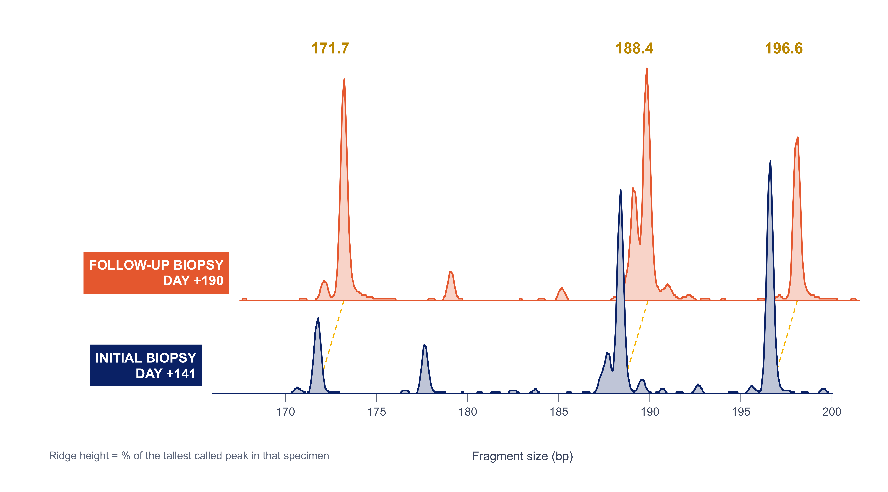
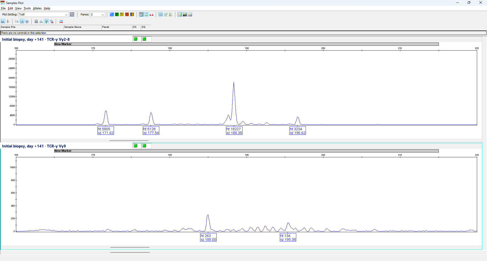
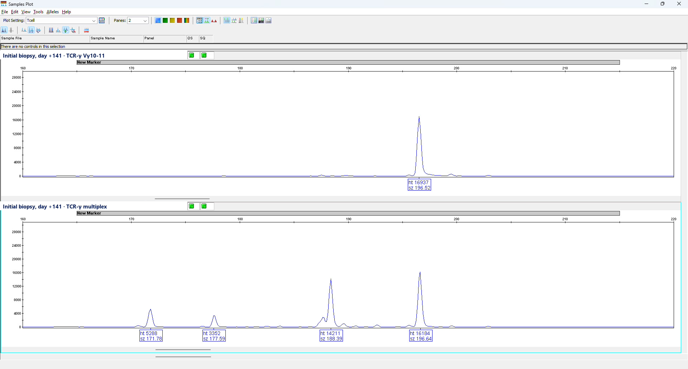
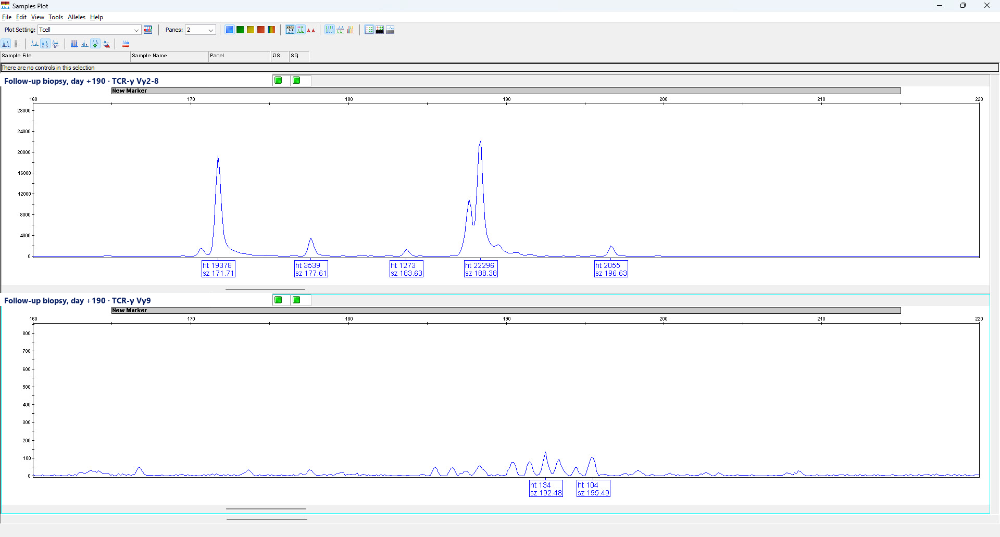
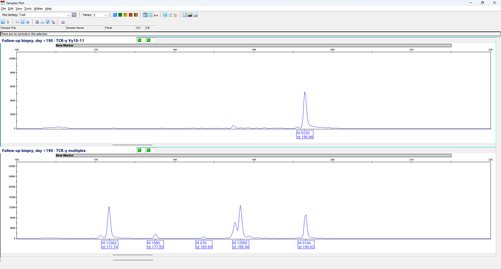

Case in brief
A man in his seventies with IgG-λ multiple myeloma (CCND1::IGH), heavily pretreated, received ciltacabtagene autoleucel after fludarabine–cyclophosphamide lymphodepletion, without cytokine release syndrome or neurotoxicity, and reached an MRD-negative complete remission. About three months later he developed progressive watery diarrhea and weight loss, with a negative infectious workup and endoscopically normal mucosa.
Duodenal biopsies showed a lamina propria CD4+ T-cell infiltrate with CD7 loss, PD-1, TIA-1 and granzyme B expression, Ki-67 <10%, and robust construct-specific (camelid VHH) staining. TCR-γ PCR showed the same oligoclonal bands at every biopsy. Targeted NGS showed no relevant variants, TRBC1 flow cytometry of blood found no circulating clone, and EBER was negative.
- Day 0Ciltacabtagene autoleucel infused.
- +99Marrow MRD-negative; PET/CT without avid disease.
- +141First duodenal biopsy for progressive diarrhea and weight loss.
- +190Second duodenal biopsy.
- +193–224Immunoglobulin, then vedolizumab; budesonide and cholestyramine earlier. Partial, transient responses.
- +228Ruxolitinib; oral intake restored.
- +245Norovirus with pneumatosis; laparotomy found no perforation.
- +303Third biopsy, after symptomatic improvement: duodenum and duodenal bulb still involved.
- +315Cyclosporine started.
- +413Diarrhea resolved, weight increasing, myeloma in remission.
TCR-γ clonality · original electropherograms
The laboratory’s original capillary-electrophoresis screenshots for all four primer sets on both biopsies. Only the sample-identifier strip in each pane has been replaced with a plain label; traces, peak calls and axes are unaltered. The day +303 run was not exported from the instrument and is not shown. Select an image to open it at full resolution.





References
- Aleman A, Van Oekelen O, Melnekoff DT, et al. Targeted Therapy of CAR+ T-Cell Lymphoma after Anti-BCMA CAR T-Cell Therapy. N Engl J Med. 2025;393:823-825. PMID 40834307 · doi:10.1056/NEJMc2504588
- Ali A, Ozdemirli M, Hamilton MP, et al. Spectrum, pathobiology, mechanistic insights and diagnostic challenges of post-CAR T cell therapy lymphoproliferative disorders. Nat Rev Clin Oncol. 2026;23:520-538. PMID 41986503 · doi:10.1038/s41571-026-01147-w
- Banerjee R, Hosoya H, Mikkilineni L, et al. Managing IEC-associated enterocolitis following CAR-T therapy in multiple myeloma. Blood Cancer J. 2025;15:112. PMID 40588476 · doi:10.1038/s41408-025-01320-x
- Baumgartner F, Dickinson M, Blombery P. CAR transgenic T-cell lymphoproliferative neoplasm: malignant transformation of cellular immunotherapy. Blood. 2026;148:2221-2228. PMID 42683850 · doi:10.1182/blood.2026033477
- Blumenberg V, Birocchi F, Shih A, et al. Ruxolitinib for ciltacabtagene autoleucel-associated refractory diarrhea. Blood. 2026;147:2215-2225. PMID 41592291 · doi:10.1182/blood.2025032347
- Braun T, Rade M, Merz M, et al. Multiomic profiling of T cell lymphoma after therapy with anti-BCMA CAR T cells and GPRC5D-directed bispecific antibody. Nat Med. 2025;31:1145-1153. PMID 39984633 · doi:10.1038/s41591-025-03499-9
- Fortuna GG, Banerjee R, Savid-Frontera C, et al. Immune effector cell-associated enterocolitis following chimeric antigen receptor T-cell therapy in multiple myeloma. Blood Cancer J. 2024;14:180. PMID 39414769 · doi:10.1038/s41408-024-01167-8
- Harrison SJ, Touzeau C, Kint N, et al. CAR+ T-Cell Lymphoma after Cilta-cel Therapy for Relapsed or Refractory Myeloma. N Engl J Med. 2025;392:677-685. PMID 39938094 · doi:10.1056/NEJMoa2309728
- Hosoya H, Bastidas Torres AN, Fernandez-Pol S, et al. Long-term follow-up of gastrointestinal CAR T-cell lymphoma: homing, clonal expansion, and response to cyclosporine. Blood. 2026;147:1191-1198. PMID 41288531 · doi:10.1182/blood.2025031423
- Karimi SS, Larman TC, Jain T, et al. Chimeric antigen receptor (CAR) T-cell therapy-related gastrointestinal toxicity: Histologic features and morphologic mimics. Hum Pathol. 2025;158:105791. PMID 40349988 · doi:10.1016/j.humpath.2025.105791
- Kethidi N, Pothukuchi S, Aleman A, et al. Persistence of mucosal CAR-T cells and inflammatory remodeling in enterocolitis associated with BCMA CAR-T cell therapy. Nat Med. 2026 (epub ahead of print). PMID 42778764 · doi:10.1038/s41591-026-04632-y
- Lim KJC, Lee HE, Chen ZE, et al. Diagnosis and management of immune effector cell-associated enterocolitis after ciltacabtagene autoleucel. Blood Adv. 2026;10:4495-4507. PMID 41961998 · doi:10.1182/bloodadvances.2025018853
- Osnis L, Hart J, Olivas A, et al. Patterns of Gastrointestinal Injury Associated With CAR-T Therapy for Patients With Multiple Myeloma. Am J Surg Pathol. 2026;50:292-300. PMID 41372162 · doi:10.1097/PAS.0000000000002499
- Ozdemirli M, Loughney TM, Deniz E, et al. Indolent CD4+ CAR T-Cell Lymphoma after Cilta-cel CAR T-Cell Therapy. N Engl J Med. 2024;390:2074-2082. PMID 38865661 · doi:10.1056/NEJMoa2401530
- Patel C, Cheng J, Zhou J, et al. Characterization of histologic spectrum and T-cell clonality in immune effector cell-associated enteritis. Hum Pathol. 2026:106267. PMID 42763062 · doi:10.1016/j.humpath.2026.106267
- Perica K, Jain N, Scordo M, et al. CD4+ T-Cell Lymphoma Harboring a Chimeric Antigen Receptor Integration in TP53. N Engl J Med. 2025;392:577-583. PMID 39908432 · doi:10.1056/NEJMoa2411507
- Ritter J, Iftikhar S, Folk A, et al. Persistent CAR-T signal in delayed immune effector cell-associated enterocolitis following axicabtagene ciloleucel. Leuk Lymphoma. 2026;67:1994-1997. PMID 42157590 · doi:10.1080/10428194.2026.2672110
- Sarami I, Medeiros LJ. CAR-T cell therapy and its complications: Role of the pathologist in diagnosis. Hum Pathol. 2026:106199. PMID 42264273 · doi:10.1016/j.humpath.2026.106199
- Shi WJ, Wang HY. A comprehensive review of T-cell lymphoma following CAR T-cell immunotherapy. Blood Adv. 2026;10:6981-6990. PMID 42623673 · doi:10.1182/bloodadvances.2026021166
- Somay K, Azakli H, Chahine JJ, et al. Is immune effector cell-associated enterocolitis a CAR T-cell lymphoproliferative disorder?. Blood Cancer J. 2025;15:117. PMID 40610397 · doi:10.1038/s41408-025-01319-4
- Susanibar-Adaniya S, Derman BA, Cohen AD, et al. Immune effector cell-associated enterocolitis post-BCMA directed CAR T-cell therapy: insights from a multicenter case series. Blood Cancer J. 2026;16. PMID 42049698 · doi:10.1038/s41408-026-01473-3
- Verdun N, Marks P. Secondary Cancers after Chimeric Antigen Receptor T-Cell Therapy. N Engl J Med. 2024;390:584-586. PMID 38265704 · doi:10.1056/NEJMp2400209
Poster
Download the poster PDFPresented at ASCP / CAP-ACP 2026, Palais des congrès de Montréal, Poster 6 (Hematopathology).